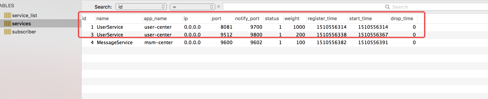
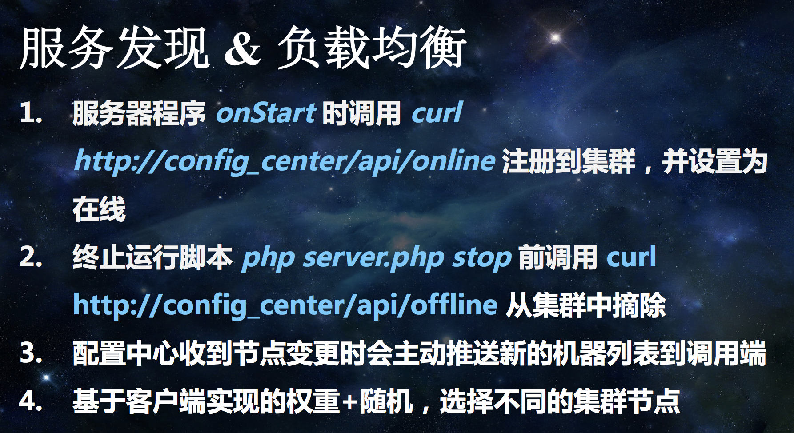
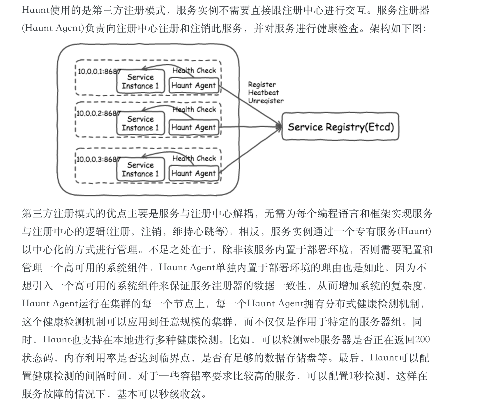
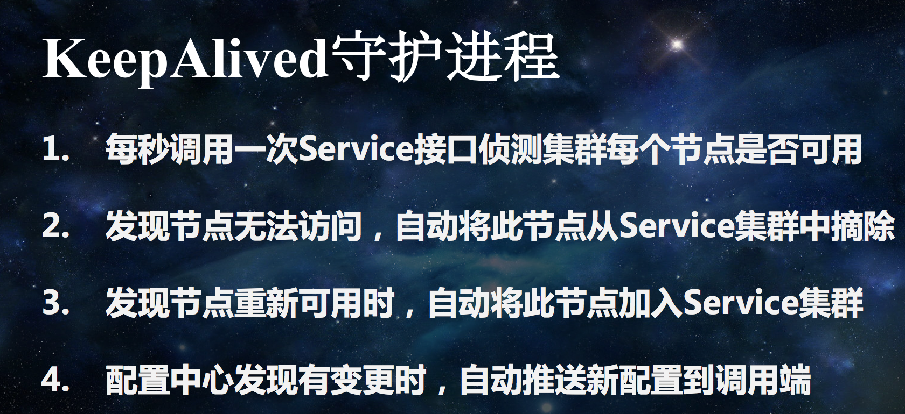
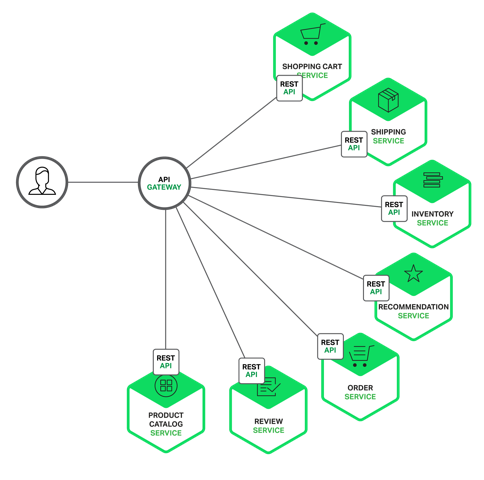
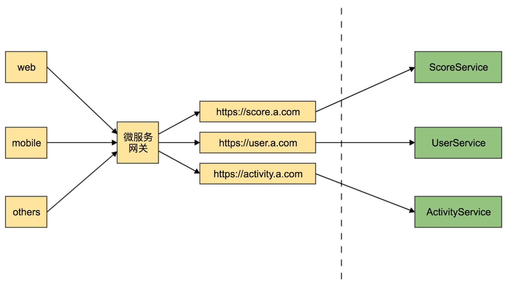

这个系列，是基于梦康大佬的课程所做的整理https://segmentfault.com/l/1500000011300619
1.服务治理和微服务的关系
服务治理用来实现各个微服务实例的注册与发现，是微服务架构中最关键的基础设施。
一个服务治理框架一般由以下两部分组成：服务注册和服务发现。
2.服务注册
服务注册中心：每个服务实例会向注册中心注册自己的信息，一般包含地址、端口、协议、版本等信息。每种服务会有多个实例副本注册到注册中心，注册中心维护每种服务的多个实例列表。同时，注册中心会以某种机制去检查各个服务实例是否可用，如果某个实例已经失效会将其剔除。在某个服务实例关闭时会自动向注册中心注销自己。

上图就是用数据库当作注册中心，UserService这个用户服务有两个实例。
1 | 常见的服务注册有两种实现方式： |
这两种实现方式都有PHP例子，第一种是韩天峰的swoole方式，第二种是有赞的haunt方式。

第2种：参考https://tech.youzan.com/haunt-youzan-service-discovery/

3.服务发现
服务发现即客户端在其网络上找到其要调用服务的具体连接信息的过程。例如通过查询服务注册中心得到其所调用服务的具体 IP地址和端口。 简单的说，服务发现就是服务或者应用之间互相定位的过程。
服务发现也有几种常见的实现方式：
1 | 1）静态配置：这种实现基本上不用考虑，为了实现服务的高可用需要手动维护服务实例副本的列表，显然不适合微服务架构下众多的服务以及服务治理的自动化需求。 |
据目前了解，一般是结合2和3的方式去做服务发现。方式2是注册中心会马上感应到服务的配置变更、异常，但通知给该服务的各个调用者有一定的延时，服务都挂了，调用方还去请求；方式3客户端与服务注册中心绑定，要针对服务端用到的每个编程语言和框架，实现客户端的服务发现逻辑；而且对于服务治理不是非常友好。(待细究)
4.负载均衡
服务发现除了实现方式，还需要一个负载均衡算法。
负载均衡很容易想到Nginx，Nginx有5种方式，轮询（默认）、加权轮询、ip_hash、fair和url_hash。
后端不同服务器性能不均衡的情况下，负载均衡算法选择“加权轮询”是比较常见的做法，也是比较一般的做法…不那么一般的算法，就可以参考Zookeeper、Consul等等。
Nginx版加权轮询，可以参考http://blog.csdn.net/zhangskd/article/details/50194069
PHP版加权轮询，根据上面的博客，也可以轻松写出。
1 |
|
上面是服务实例的负载均衡，它满足了大部分人需求，但总有一些需求真是你想都想不到…
比如，用户服务暴露了两个方法，getUserInfo和isSingle，用户服务方觉得isSingle方法调用频率相当高（根据监控中心数据），是getUserInfo的好几倍，于是用户服务方决定写个规则，凡是调用isSingle方法的都转到服务器b和c，不提供getUserInfo，要getUserInfo只能去调用服务器a。
又比如，用户服务有两个services，一个是UserService, 一个是DriverService，也是根据监控中心发现DriverService明显被频繁调用，于是又写一条规则…
这些都是属于负载均衡，在服务发现之后，选择服务前做的事情。
5.服务下线
服务下线正常流程都会去通知注册中心，注册中心再去通知客户端消费者。但弊端也如前文所述，会有延时，除此之外，服务自己出现异常，然后挂了，它是不会去通知注册中心的。所以这时候应该怎么办？
应该引入心跳机制。
1 | 什么是心跳机制？ |
但韩天峰在大会上分享的做法是起一个KeepAlived守护进程

6.再谈谈服务治理跟微服务的关系
在整理服务治理相关内容时候，服务注册、发现、负载均衡、下线，还有服务鉴权和服务监控，发现一个治理都要做这么多工作，让我很容易想到微服务的网关，这些工作不也是网关干的吗？
随便网上搜微服务的架构，大都是：微服务=服务网关+Restful Api
而且大部分博客真的是都喜欢引用这张图…

但是服务治理的架构是这样的：服务治理=注册中心+服务接口
后来听了老司机的课程，其实微服务整体架构是对外的，服务治理整体架构是对内的，可以结合下图理解。

虚线左边就是一个网关跟很多API，给Web端，App端等等通过restful方式请求访问，这是对外；
虚线右边就是服务治理，一个API请求会调用一个或者多个服务，这些服务落在不同服务器上，就需要服务治理，这是对内。
外面的Web，APP端不可能直达服务治理中心，客户端也不懂后端各种Service，然后直接调用Service方法，当然，对内东西对外暴露也不安全。
更详细的讲解可以看看这篇文章 http://blog.csdn.net/suifeng3051/article/details/53992560，看了这篇文章，思路会更加清晰，这也解决了我另一个疑惑，为什么大佬们做微服务都想到java，想到Dubbo和Spring Cloud。